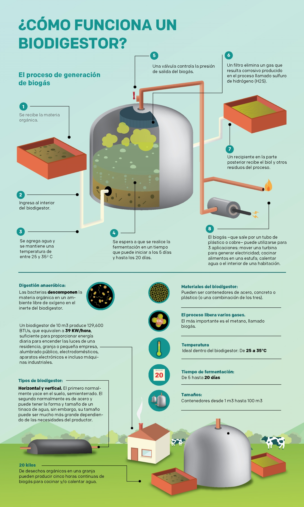

Home
Biogas is a renewable energy source that can be used to generate heat, electricity, and transportation fuel. It is made from organic materials such as manure, food waste, and agricultural residues. Biogas is a clean and sustainable energy source that can help reduce our reliance on fossil fuels.
Contact Us
If you are interested in learning more about biogas, please contact us at info@biogaswebsite.com or call us at +1-800-555-1212.
About Us
We are a company that is committed to promoting the use of biogas as a renewable energy source. We offer a variety of products and services to help businesses and individuals reduce their reliance on fossil fuels. We believe that biogas is a clean, sustainable, and affordable energy source that can help us create a more sustainable future.